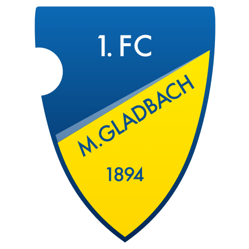

1. FC Mönchengladbach
Die erste Meisterschaft der Best of Cup Geschichte ging mit einer historischen Rekordleistung an die Fohlenstadt!
In der Premierensaison 2025/2026 dominierte der 1. FC Mönchengladbach den Wettbewerb des Jahrgangs 2014. Mit einer makellosen Bilanz von 16 Siegen in 16 Spielen, maximaler Punktausbeute und herausragenden Leistungen sowohl im Großfeld (8+1) als auch in den Twin Games krönte sich das Team verdient zum allerersten Gesamtsieger des Best of Cups.
Saison 2026/2027 – Die Liga wächst
Mit der Saison 2026/2027 geht der Best of Cup in die nächste Ära: Erstmals treten zwei komplette Spielklassen an. Sowohl im Jahrgang 2014 (8+1 & Twin Games) als auch im Jahrgang 2016 (6+1 & Twin Games) kämpfen hochkarätige Nachwuchsteams um den begehrten Wanderpokal.
Ehrentafel der Best of Cup Meister
| Saison | Jahrgang | Meister | Bilanz | Punkte |
|---|---|---|---|---|
| 2025/2026 | 2014 (8+1) |
1. FC Mönchengladbach 🏆
|
16-0-0 | 48 |
| 2026/2027 | 2014 (8+1) | Wettbewerb läuft | – | – |
| 2026/2027 | 2016 (6+1) | Wettbewerb läuft | – | – |